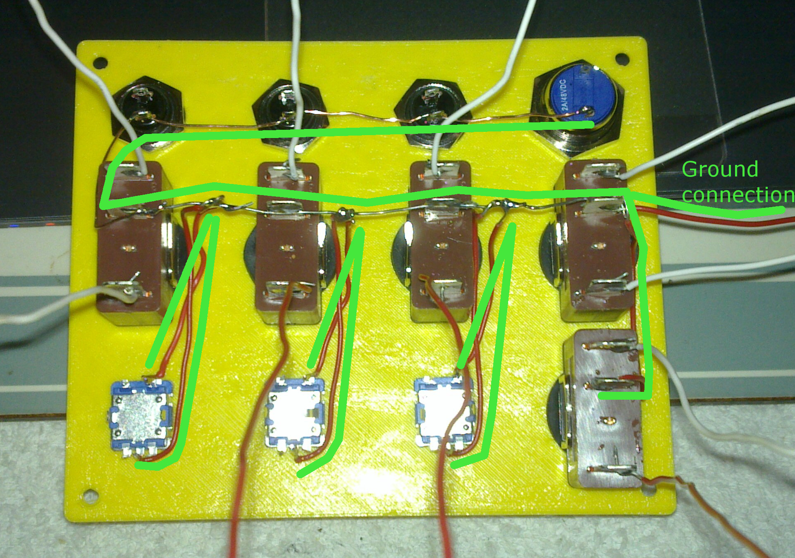

-
Begin by printing the main case found in "Main Module\Case\". I suggest you print the face plate first so you can start assembly while the rest is printed.
Never print a "Face Plate v2" for a "Main Body v3". You only need one face plate.- Face Plate Box MAIN BODY -v3.STL
This is the main body of the button box - Face Plate Box MAIN - v3 - Top Row Ignition + 3 buttons
This face plates comes with one 16mm hole in the top left corner for an ignition switch - Face Plate Box MAIN - v3 - Top Row 4 Buttons.STL
This face plates offers four identical mounting holes for the top row.
- Face Plate Box MAIN BODY -v3.STL
-
The box can be mounted so the bottom sits flush on the table ("Flush Brackets") or the bottom of the box will sit below whatever it is mounted to ("Lowered Brackets").
The filename also indicates the type of bracket. A "90 degree" bracket will make the box sit perpendicular to your desk while a "75 degree" bracket is tilted back by 25 degrees.
Add Image of Proto 2 Mount here- Mount Bracket 90 degrees.STL
The box stand vertical with this bracket. - Mount Bracket 75 degrees.STL
The box will be tilted back by 25 degrees with this bracket.
- Mount Bracket 90 degrees.STL
-
Time to get dirty. Screw the switches onto the face plate. Some switches come with rubber gaskets to make them water resistant. I recommend that you don't use them since we don't intend to race in the rain
and the main housing isn't water resistant either ;)
Make soldering easy by orienting all switches the same way, then connect all grounds together.
Ignore the wires connected to the top and bottom terminals of the toggle switches. I already had them soldered for my prototype and did not feel ti disconnect the wires ... a better image will be uploaded "sooon"
 -
Now connect the other button terminals to the Teensy 3.2 board. Start with GND (Ground), then pins 1 to 12 and finally pins 14-23. DO NOT USE Pin 13, it is for the LED so connecting a switch may not work without removing the LED first.
It should look similar to this when you are done. Make sure you place the Teensy behind the top row since those switches are the shortest and give the Teensy more room in the case.
Make sure you write down the pin number for every buttong!
-
(Optional but highly recommended)
Verify the operation of every switch with a multimeter. Set it to test continuity (beeps when you short the leads), connect one lead to ground and the other to the switch terminal connected to the Teensy.
The multimeter should only beep when you press the button. Also test that you don't have a short to the button next to it since a short may happen when you solder the wires to the Teensy board.
- TO DO - Add Info on how to instal Arduino IDE with Teensy extension!!!!!!!!!!!!!!!!!!!!!!!!!!!!!
-
Open the Sketch and click on the "CONFIG" tab within the sketch. Here you will see a list of every button with the pin and function assigned to each one.
Take a look at the following tables. These are the keys you can tell then Teensy to send to your computer.